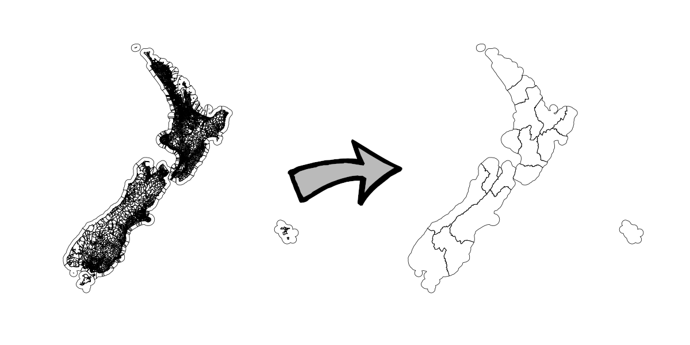

Overview
Apache Sedona, formerly GeoSpark, is a library that let’s us make spatial RDDs and DataFrames in Apache Spark, as well as to run spatial queries. Feature classes can get very large, and so being able to run various geoprocessing tasks in a distributed context seems worthwhile. So, in this post, we take a very brief look at Apache Sedona.
This post is not intended to provide comprehensive coverage of the features provided by Sedona–that would be pretty unrealistic for a short blog post. Rather, we will just run a couple of simple examples which will give some sense of both the overall interface and also performance relative to some other common tools.
For the purposes of illustration, we consider just two examples:
- dissolve a set of polygons via
ST_Union_Aggr/ST_Union - attach polygon attributes to a set of points using
ST_Intersects
The polygons we will dissolve are Meshblock Higher Geographies 2021 (high definition) provided by Stats NZ, and the grouping variable used will be Regional Council. For the task of attaching polygon attributes to points, we borrow the meshblock code from the meshblock 2021 feature class above, and we attach it to NZ Street Address provided by Land Information New Zealand (LINZ).
Neither of these tasks is massive, with each being comfortably achievable on a single, typically endowed laptop. In this setting, PostGIS is faster than Sedona, but Sedona offers a more scalable solution overall. Sedona can perform as well as PostGIS when using a cluster with several workers, and Sedona should scale to very large problems where vertical scaling of PostGIS would become challenging.
Environment
The majority of the examples in this post were executed on a Dell XPS 15 laptop with 16GB of DDR4 RAM @ 2667MHz, and 12 x Intel(R) Core(TM) i7-9750H CPU @ 2.60GHz. In this environment, we run Spark in pseudo-distributed mode. That is, we use multiple workers, but all on a single host, and using an exclusively local filesystem.
Spark is really intended to be used in a genuinely distributed environment, though, and so for comparison we also run our code using AWS Elastic MapReduce. We use emr-6.2.0, with Hadoop 3.2.1 and Spark 3.0.1, and the instances themselves are m5.xlarge which have 4 virtual cores and 16GiB of RAM. We vary the number of worker nodes, choosing configurations with both 6 and 12 workers. Importantly, in this scenario we also use a distributed filesystem (HDFS).
Example 1 - Dissolve Meshblock by Regional Council
As noted, for our first example we take the union of all meshblocks by Regional Council. Visually:

We discuss each approach in detail below, but a high-level summary is as follows:
SELECT
regc2021_v,
ST_Multi(ST_Union(geom)) as geom
FROM
statsnz.meshblock2021
GROUP BY
regc2021_v
ORDER BY
regc2021_vrc <- mbhg %>%
group_by(REGC2021_V) %>%
summarise(n = n())val rc = spark.sql("""
SELECT
REGC2021_V,
ST_Union_Aggr(geometry)
as geometry
FROM
mb
GROUP BY
REGC2021_V
ORDER BY
REGC2021_V
""")The run-times are 121, 124, and 152 seconds, respectively, for PostGIS, R, and Sedona. Sedona will scale to some extent–when run on a cluster using Elastic MapReduce (6.2.0), Sedona took 122 seconds with 6 workers, and 108 seconds with 12 workers. Other optimisations are likely possible when tuning various cluster parameters, such as number of workers, driver memory, and so on.
PostGIS
Assuming we have stored the meshblock features in a PostGIS table called statsnz.meshblock2021, we can dissolve them by running the following SQL query:
SELECT
regc2021_v, ST_Multi(ST_Union(geom)) as geom
FROM
statsnz.meshblock2021
GROUP BY
regc2021_v
ORDER BY
regc2021_vThis took 121 seconds.
R / sf
To import the meshblock data in R, we run:
library(sf)
system.time({
mbhg <- st_read("meshblock-higher-geographies-2021-high-definition.shp")
})This took 3 seconds, and the resulting data frame occupies 300MB in memory. To dissolve it, we run:
rc <- mbhg %>%
group_by(REGC2021_V) %>%
summarise(n = n())This took around 124 seconds, and the resulting data frame occupies 3.9MB in memory.
Sedona - Local
We first load our meshblock feature class as follows:
import org.apache.sedona.core.formatMapper.shapefileParser.ShapefileReader
val mbrdd = ShapefileReader.readToPolygonRDD(
sc, // the cluster SparkContext
"meshblock-higher-geographies-2021-high-definition"
)The type of mbrdd is PolygonRDD, which is-a SpatialRDD. SpatialRDD has a standard RDD under the hood, and has methods for adding indexes, doing spatial joins, and so on. However, we can convert SpatialRDDs to DataFrames, and then run reasonably standard looking SQL queries on the result. This is probably going to be the most accessible option for those who aren’t terribly familiar with Spark or Java / Scala. To convert to DataFrame:
import org.apache.sedona.sql.utils.{Adapter, SedonaSQLRegistrator}
SedonaSQLRegistrator.registerAll(spark)
val mbdf = Adapter
.toDf(mbrdd, spark)
.repartition(32)
.persistThe result is a DataFrame where our geometry is stored as type Geometry in a column called geometry, and calling registerAll(spark) ensures that the Geometry type is understood by Spark. For example, we create a user-defined function which calculates the area of a polygon:
import org.locationtech.jts.geom.Geometry
import org.apache.spark.sql.functions.{col, udf}
val f: (x: Geometry) => x.getAreaand use it to derive an area column:
mbdf
.withColumn("area", f(col("geometry")))
.select("MB2021_V1_", "REGC2021_V", "REGC2021_2", "area")
.limit(10)
.show+----------+----------+------------------+--------------------+
|MB2021_V1_|REGC2021_V| REGC2021_2| area|
+----------+----------+------------------+--------------------+
| 0973300| 03| Waikato Region| 68346.86758174733|
| 4002221| 06|Hawke's Bay Region| 42925.980450310104|
| 4008822| 13| Canterbury Region| 37448.43920328615|
| 2311100| 13| Canterbury Region|3.8148438963027686E7|
| 2815503| 13| Canterbury Region| 24410.008602414582|
| 0221305| 02| Auckland Region| 884246.943146247|
| 1152900| 03| Waikato Region| 4.621434800254852E7|
| 4011098| 13| Canterbury Region| 8207.470212947434|
| 4011489| 13| Canterbury Region|1.0198131361068603E7|
| 2830201| 14| Otago Region| 96059.66604287364|
+----------+----------+------------------+--------------------+Either way, we now create a view from the DataFrame which we can use from our SQL context:
mbdf.createOrReplaceTempView("mb")and then use to write standard looking spatial SQL queries. For example, we now add an area column in an arguably more straightforward manner:
spark
.sql("""
SELECT
MB2021_V1_,
REGC2021_V,
REGC2021_2,
ST_AREA(geometry) as area
FROM
mb
LIMIT 10
""")
.show+----------+----------+------------------+--------------------+
|MB2021_V1_|REGC2021_V| REGC2021_2| area|
+----------+----------+------------------+--------------------+
| 0973300| 03| Waikato Region| 68346.86758174733|
| 4002221| 06|Hawke's Bay Region| 42925.980450310104|
| 4008822| 13| Canterbury Region| 37448.43920328615|
| 2311100| 13| Canterbury Region|3.8148438963027686E7|
| 2815503| 13| Canterbury Region| 24410.008602414582|
| 0221305| 02| Auckland Region| 884246.943146247|
| 1152900| 03| Waikato Region| 4.621434800254852E7|
| 4011098| 13| Canterbury Region| 8207.470212947434|
| 4011489| 13| Canterbury Region|1.0198131361068603E7|
| 2830201| 14| Otago Region| 96059.66604287364|
+----------+----------+------------------+--------------------+More importantly, we can dissolve the meshblocks by region as desired as follows:
val rc = spark.sql(
"""
SELECT
REGC2021_V,
ST_Union_Aggr(geometry) as geometry
FROM
mb
GROUP BY
REGC2021_V
ORDER BY
REGC2021_V
"""
)Spark SQL execution is lazy, so we need to trigger an action in order to see how long this actually takes. I like to write a little function I can re-use for timing purposes as follows:
def timeit[T](block: =>T): (T, Double) = {
val startTime = System.nanoTime
val res: T = block
(res, (System.nanoTime - startTime) / 1e9)
}So:
val (_, t) = timeit { rc.show }t: Double = 152.024319529At 152 seconds this is a little slower than PostGIS, but pretty reasonable all the same. However, there is a pretty big caveat here. Spark is pretty sophisticated, and in practice performance will vary a lot depending on how things are configured. We can vary the number of executors, the number of cores each executor can use, driver memory, and so on, and so on. In this case we did not spend any time tuning these parameters, but we did deliberately repartition the input meshblock features into 36 chunks, and this has a dramatic effect on performance. The following chart shows runtime as a function of the number of partitions:
The machine this task was run on has 12 cores, and the best performance seems to be roughly where there are 3 times as many partitions as cores.
Note that those familiar with Spark could attempt to do things a bit more… primitively. Looking again at the original object, mbrdd, we can get the underlying RDD as:
mbrdd.getRawSpatialRDD.rddThis is essentially just a collection of objects of type Geometry. We can call a method getUserData on a Geometry object to get the attributes associated with a feature as a single tab-delimited string. The 24th field is the regional council code, and we can use this to create a pair RDD:
val pairrdd = mbrdd
.getRawSpatialRDD.rdd
.groupBy(x => x.getUserData.toString.split("\t")(24))We can then fold the geometries in each key-value pair naively as follows:
val rc = pairrdd
.map(x => {
val y = x._2
(x._1 -> y.tail.foldLeft(y.head)(_.union(_)))
})This does in fact give us what we want, however the approach turns out to be way too naive, taking 45 minutes all up! That said, it would scale if we threw enough workers at it. Still, at times this sort of approach will be useful.
Sedona - Elastic MapReduce
When deployed on Elastic MapReduce, the code required is the same, with very minor differences. In this case, we naively set the number of partitions for each input feature class to be the number of cores times the number of workers. In addition, when using EMR we store our source shapefiles in the Hadoop filesystem. A cluster with 6 workers was able to dissolve the features as required in 122 seconds, and a cluster with 12 workers dissolved the features in 108 seconds.
Example 2 - Intersection of Addresses and Meshblocks
For the next example, we find the meshblock polygon each of our address points belongs to, and we then borrow attributes from the containing polygon, attaching them directly as attributes of each address point. Visually:
We discuss each approach in detail below, but a high-level summary is as follows:
SELECT
addr.address_id,
addr.full_add_1,
mb.mb2021_v1_,
addr.geom
FROM
linz.address addr,
statsnz.meshblock2021 mb
WHERE
st_intersects(addr.geom, mb.geom)sf::st_intersection(
select(
addr, ADDRESS_ID, FULL_ADD_1
),
select(mbhg, MB2021_V1_)
) val rc = spark.sql("""
SELECT
REGC2021_V,
ST_Union_Aggr(geometry)
as geometry
FROM
mb
GROUP BY
REGC2021_V
ORDER BY
REGC2021_V
""")The run-times are 193, 3194, and 268 seconds, respectively, for PostGIS, R, and Sedona. As before, Sedona will scale to some extent–when run on a cluster using Elastic MapReduce (6.2.0), Sedona took 154 seconds with 6 workers, and 110 seconds with 12 workers. Other optimisations are likely possible when tuning various cluster parameters, such as number of workers, driver memory, and so on. R is extremely slow in this case because we do not create and exploit any kind of spatial indexing.
PostGIS
Assuming we have address points stored in a PostGIS table called linz.address, and meshblock as before in statsnz.meshblock2021, we can borrow attributes from each address’ enclosing meshblock as follows:
SELECT
addr.address_id,
addr.full_add_1,
mb.mb2021_v1_,
addr.geom
FROM
linz.address addr,
statsnz.meshblock2021 mb
WHERE
st_intersects(addr.geom, mb.geom)This took 193 seconds. Note that to ensure this query can be executed efficiently, it is necessary to ensure spatial indexes are created for both input features ahead of time. For example:
CREATE INDEX address_geom_idx ON linz.address using GIST(geom);
CREATE INDEX meshblock2021_geom_idx ON statsnz.meshblock2021 using GIST(geom);R / sf
To import the address data in R, we run:
system.time({
addr <- st_read("nz-street-address.shp")
})This took 40 seconds, and the resulting data frame occupies 1.5GB in memory. To intersect this with the meshblock feature class:
sf::st_intersection(
select(addr, ADDRESS_ID, FULL_ADD_1),
select(mbhg, MB2021_V1_)
) This took 3194 seconds, or 53 minutes. This is slow because there is no way to make use of a spatial index, and to find which meshblock an address is in will require a full scan of the meshblock feature class for each address. Note, though, that it would be easy to parallelise this task simply by breaking the address input into ranges and intersecting each concurrently.
Sedona - Local
To create a DataFrame containing addresses, we run:
val addrpath = "shp/linz/nz-street-address"
val addrrdd = ShapefileReader.readToGeometryRDD(sc, addrpath)
val addr = Adapter.toDf(addrrdd, spark).repartition(32).persist
addr.createOrReplaceTempView("addr")And to intersect this with the meshblock DataFrame, we run:
val addrmb = spark
.sql("""
SELECT
addr.ADDRESS_ID,
addr.FULL_ADD_1,
mb.MB2021_V1_,
addr.geometry
FROM
addr,
mb
WHERE
st_intersects(addr.geometry, bb.geometry)
""")This took 268 seconds. This is reasonable, but still a little slower than using PostGIS. As for the PostGIS query, it is necessary to ensure that spatial indexes are used in order for this query to run efficiently. One way of doing this is to ensure we set the Spark config sedona.global.index to true. Without doing this, the query will run much slower.
As before, we can get similar results using RDDs directly. For example, we can produce a new pair RDD that contains meshblocks as a key, and all the points within the meshblock as values in the following way:
import org.apache.sedona.core.enums.IndexType
import org.apache.sedona.core.spatialOperator.JoinQuery
addrrdd.spatialPartitioning(GridType.KDBTREE)
mbrdd.spatialPartitioning(addrrdd.getPartitioner())
addrrdd.buildIndex(IndexType.QUADTREE, true)
mbrdd.buildIndex(IndexType.QUADTREE, true)
val result = JoinQuery.SpatialJoinQuery(addrrdd, mbrdd, true, false)Again, those familiar with Spark already will find objects like this relatively easy to work with. For example, to print a list of meshblock and address ID pairs:
result.rdd.flatMap(x => {
val mbid = x._1.getUserData.toString.split("\t")(1)
val addrids = x._2.asScala.map(_.getUserData.toString.split("\t")(1))
addrids.map((mbid, _))
}).take(10).foreach(println)(4003499,2099993)
(4003499,2099992)
(4003499,2099994)
(1619000,2099934)
(2817502,2010408)
(3031002,2099960)
(4008278,2099958)
(4007449,2100082)
(4006988,2099944)
(1618904,2099935)Sedona - Elastic MapReduce
When deployed on Elastic MapReduce, the code required is the same, with very minor differences. In this case, we again naively set the number of partitions for each input feature class to be the number of cores times the number of workers. A cluster with 6 workers was able to dissolve the features as required in 154 seconds, and a cluster with 12 workers dissolved the features in 110 seconds
Appendix - Getting a REPL Up and Running
sbt console
One of the easier ways to get running with Spark is to set up a basic sbt project. We can then use the sbt console to run code interactively, or else output a jar file which can be used with spark-shell. To get going, all we need is a build.sbt file with the following content:
name := """sedonatest"""
version := "0.0.1"
scalaVersion := "2.12.13"
scalacOptions += "-Ydelambdafy:inline"
libraryDependencies ++= Seq(
"org.apache.spark" %% "spark-core" % "3.0.1",
"org.apache.spark" %% "spark-sql" % "3.0.1",
"org.apache.sedona" %% "sedona-core-3.0" % "1.0.0-incubating",
"org.apache.sedona" %% "sedona-sql-3.0" % "1.0.0-incubating",
"org.apache.sedona" %% "sedona-viz-3.0" % "1.0.0-incubating",
"org.apache.sedona" %% "sedona-viz-3.0" % "1.0.0-incubating",
"org.locationtech.jts" % "jts-core" % "1.18.1",
"org.geotools" % "gt-main" % "24.0",
"org.geotools" % "gt-referencing" % "24.0",
"org.geotools" % "gt-epsg-hsql" % "24.0"
)
resolvers ++= Seq(
"Open Source Geospatial Foundation Repository" at "https://repo.osgeo.org/repository/release/",
"Apache Software Foundation Snapshots" at "https://repository.apache.org/content/groups/snapshots",
"Java.net repository" at "https://download.java.net/maven/2"
)From within the project folder, we first run sbt to get an interactive build shell, and then console to get to the Scala REPL. Run this way, the Spark and Sedona libraries will both be available.
Unlike spark-shell, sbt console will not provide a SparkSession instance. Assuming we’re running in standalone mode, we can create one as follows:
val spark: SparkSession = SparkSession
.builder
.master("local[*]")
.appName("sedonatest")
.config(
"spark.serializer",
"org.apache.spark.serializer.KryoSerializer"
)
.config(
"spark.kryo.registrator",
"org.apache.sedona.viz.core.Serde.SedonaVizKryoRegistrator"
)
.config("sedona.global.index","true")
.getOrCreateAnd, of course, to get a SparkContext:
val sc = spark.sparkContextspark-shell
If we have access to a Spark cluster and wish to use spark-shell instead, then we’d modify the dependencies in build.sbt as follows:
libraryDependencies ++= Seq(
"org.apache.spark" %% "spark-core" % "3.0.1" % "provided",
"org.apache.spark" %% "spark-sql" % "3.0.1" % "provided",
"org.apache.sedona" %% "sedona-core-3.0" % "1.0.0-incubating",
"org.apache.sedona" %% "sedona-sql-3.0" % "1.0.0-incubating",
"org.apache.sedona" %% "sedona-viz-3.0" % "1.0.0-incubating",
"org.apache.sedona" %% "sedona-viz-3.0" % "1.0.0-incubating",
"org.locationtech.jts" % "jts-core" % "1.18.1",
"org.geotools" % "gt-main" % "24.0",
"org.geotools" % "gt-referencing" % "24.0",
"org.geotools" % "gt-epsg-hsql" % "24.0"
)We’d typically make a so-called ‘fat jar’, and adding % "provided" ensures the Spark dependencies, which will be present already, aren’t included in the archive. Note that we’re using Spark 3.0.1 here, so adjust this as required to match whatever is installed in your cluster.
To make a fat jar, we ensure ./project/assembly.sbt is present with the following content:
addSbtPlugin("com.eed3si9n" % "sbt-assembly" % "0.14.10")We can then run sbt assembly from the project root, producing, in this case, ./target/scala-2.12/sedonatest-assembly-0.0.1.jar. We then start spark-shell as follows:
spark-shell --jars sedonatest-assembly-0.0.1.jarIf we wish the jar file to have a different name, sedonatest.jar for example, we’d add the following to build.sbt:
assemblyJarName in assembly := "sedonatest.jar"Note that if we get duplicate dependency errors when running assembly, then we can add something like the following to build.sbt:
assemblyMergeStrategy in assembly := {
case PathList("META-INF", xs @ _*) => MergeStrategy.discard
case x => MergeStrategy.first
}Elastic MapReduce uses YARN as a resource manager, so we also omit the following line when creating our SparkSession:
.master("local[*]")Appendix - Data
Meshblock Higher Geographies 2021 (high definition) is a set of 53596 polygons covering the full extent of New Zealand. It was downloaded in ESRI shapefile format. Zipped, it weighs in at 155MB, and unzipped, 504MB. All other higher geographies maintained by Stats NZ are collections of meshblocks, and the attribute table provided includes concordances.
NZ Street Address is a set of 2107573 address points. Zipped, the shapefile is 178MB, and unzipped it is 2.8GB. The address points are split into 3 different shapefiles when using Koordinates, which we collapsed into one post-download.
Note that Sedona seems to require shapefiles to be stored in a certain way. Specifically, that we put shapefiles in a folder which has the same name as the individual components. For the meshblocks, this means:
meshblock-higher-geographies-2021-high-definition
├── meshblock-higher-geographies-2021-high-definition.cpg
├── meshblock-higher-geographies-2021-high-definition.dbf
├── meshblock-higher-geographies-2021-high-definition.prj
├── meshblock-higher-geographies-2021-high-definition.shp
├── meshblock-higher-geographies-2021-high-definition.shx
├── meshblock-higher-geographies-2021-high-definition.txt
└── meshblock-higher-geographies-2021-high-definition.xmlMost other systems don’t require us to collect the components in a folder in this way, even if it might be sensible to organise things this way. In R, for example, we’d just refer to the shp component and the rest would be detected for as. For example:
addr <- sf::st_read("nz-street-address.shp")Note that when using Elastic MapReduce, we need to copy our input features to the Hadoop filesystem. For example:
hdfs dfs -copyFromLocal meshblock-higher-geographies-2021-high-definition /user/hadoop/